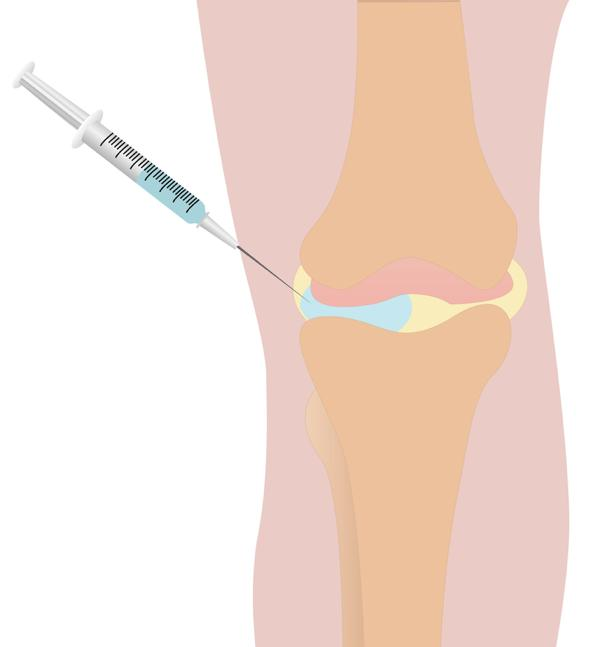

Knee joints have a natural fluid called hyaluronic acid. This fluid coats the cartilage that cushions the joint and lets the bones move smoothly. In people with arthritis, this fluid breaks down and gets thinner. That makes the knee feel stiff, swollen, and painful.

Gel-like hyaluronic acid can be injected into your knee at your care team’s office. This is called viscosupplementation. It helps the cartilage cushion in your knee.
The procedure can help you move and feel better. You may get a single shot, or you may get 1 shot per week for 2 or 3 weeks. One treatment usually lasts about 6 months.
This treatment is often used when other treatments like physical therapy, pain medicine, or steroid shots do not relieve your symptoms well enough. The shot does not work for everyone. Some people report little improvement, while others get a lot of relief.
Side effects are not common, but they can happen. Most are mild and go away in a few days. There is a risk of:
A flare-up of pain right after the shot that makes your knee feel worse for a few days
Pain or swelling at the injection site
An allergic reaction to the shot
Rarely, infection in the joint
You do not need to stop eating or drinking before this injection.
Wear loose, comfortable clothing so your knee is easy to reach.
Tell your care team about all vitamins, supplements, and medicines you take. Be sure to tell them if you take blood thinners.
Tell your care team if you have a bleeding disorder or are allergic to eggs, feathers, or chicken products. Some shots are made from animal sources.
You sit or lie down so that your knee is relaxed.
Your care team cleans your knee and may use numbing medicine so the injection is more comfortable.
A thin needle is used to place the gel-like fluid into your knee joint. Your care team may use an ultrasound image to ensure proper placement.
You may feel mild to moderate sharp pain, a pinch, or pressure during the injection, but most people say it is not very painful.
A bandage is placed to cover the site and keep germs out.
From start to finish, it will take less than 5 minutes.
You may go home right after the injection.
Put an ice pack wrapped in a cloth on your knee when you return home after the injection, and for 15 minutes on and off as needed. Your knee may feel a little sore or swollen for a day or two.
Avoid heavy exercise like running or jumping for at least 2 to 3 days.
Most people return to normal activities quickly.
It may take 4 to 6 weeks after the last injection to feel the full benefit.
Call your care team if:
You have redness, warmth, or swelling around your knee that does not get better after 2 days.
Pain in your knee gets worse or does not improve after a few days.
You have a fever above 100.4°F or 38°C that does not go away with medicine.
There is new or increasing fluid buildup or puffiness in your knee.
There is fluid leaking from the knee.
You have new or worsening trouble walking or moving your knee.
You have any questions or concerns about your knee or your recovery.
Get help right away if:
You have sudden, severe pain or swelling in your knee that comes on quickly and is very intense.
You have signs of a serious allergic reaction, such as trouble breathing, swelling of your face, lips, tongue, or throat, or hives.
You have a high fever above 102°F or 38.9°C with chills and knee redness or swelling.
There is pus leaking from your knee, or it looks very red or feels hot.
Your knee or leg is cold, blue, numb, or you cannot move it at all.
Thank you for trusting us with your care. We are here to support you and want you to feel your best. Contact us with any questions.
IF YOU HAVE A MEDICAL EMERGENCY, CALL 911 OR GO TO THE EMERGENCY ROOM.
The information presented is intended for general information and educational purposes. It is not intended to replace the advice of your health care provider. Contact your health care provider if you believe you have a health problem.
Last updated May 2025
© 2025 Mytonomy, Inc. All rights reserved.